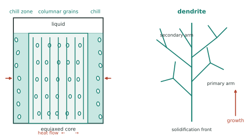

本页目录
工艺 I · 凝固、铸造与成形
几乎所有金属制品的第一步都是从液体开始——凝固决定了原始组织，而原始组织是后续一切工艺的起点（"铸造缺陷带进服役"是行业常识）。本页把凝固组织的三大控制点（形核、枝晶、偏析）讲清楚，然后接上塑性成形（轧锻挤拉）与焊接的材料学。
学习层：给一块 Al–Cu 铸锭画平衡与 Scheil 路径，先预测液体富集
1. 具体材料工程情境：铸态枝晶间偏析的快速预算
一块标称 \(C_0=4\ \mathrm{wt\%}\) Cu 的铝合金铸锭在凝固。工艺工程师想估算固相分数 \(f_s=0.65\) 时枝晶间液体是否已经富 Cu，以及均匀化退火前应把“完全固相扩散的平衡路径”和“固相不扩散的 Scheil 路径”分开。这里用常数分配系数 \(k=C_s/C_L\) 的二元教学模型，不替代真实 Al–Cu 相图或 CALPHAD。
2. 必须作答的预测门：富集、k = 1 与 fs → 1
揭示前回答三题：当 \(k<1\) 且 \(f_s\) 增大时，液体成分如何变化？若 \(k=1\)，两条路径是否还会产生分配偏析？把 \(f_s\) 推向 1 时，\(k<1\) 的理想 Scheil 式应被读成有限答案还是模型边界？三题完成后才显示曲线和质量守恒账本。
3. 正式模型桥：局部平衡 + 质量守恒
在完全固相扩散的常数 \(k\) 代理下，当前液体和固体成分满足
在液体完全混合、固相无扩散、界面局部平衡的 Scheil 代理下，
\(C_0,C_L,C_s\) 都用 wt% Cu，\(f_s,k\) 无量纲。\(k=1\) 时两条路径退化为 \(C_0\)；\(k<1\) 且 \(f_s\to1\) 时理想 Scheil 的 \(C_L\) 形式发散，实际会先遇到固溶度、共晶反应、对流或传质边界。
4. 动手实验：沿两条路径追踪液相、瞬时固相与平均固相
JavaScript 失效时的静态 fallback：默认取 \(C_0=4\ \mathrm{wt\%}\) Cu、\(k=0.25\)、\(f_s=0.65\)。平衡代理为 \(C_L=7.805\) wt%、\(C_s=1.951\) wt%；Scheil 代理为 \(C_L=8.790\) wt%、瞬时 \(C_s=2.198\) wt%、平均固相 \(C_{s,avg}=1.421\) wt%，质量闭合误差为 0 wt%。
| 账本量 | 静态结果 | 单位 / 读法 |
|---|---|---|
| 初始成分 \(C_0\) | 4.000 | wt% Cu |
| 分配系数 \(k\) | 0.250 | \(C_s/C_L\)；常数代理 |
| 当前固相分数 \(f_s\) | 0.650 | 无量纲 |
| 平衡 \(C_L/C_s\) | 7.805 / 1.951 | wt%；完全固相扩散代理 |
| Scheil \(C_L/C_{s,inst}\) | 8.790 / 2.198 | wt%；液体混合、固相无扩散 |
| Scheil 平均固相 | 1.421 | wt%；由守恒反算 |
| 质量闭合误差 | 0.000000 | wt%；\(f_sC_{s,avg}+(1-f_s)C_L-C_0\) |
5. 误区与模型边界：凝固路径不是实测相图的替身
- 平衡路径把固相扩散理想化为充分快，把 \(k\) 理想化为常数；Scheil 路径把液体混合和固相无扩散理想化。枝晶间距、液体对流、固相扩散、界面动力学和温度梯度会让真实路径落在两者之间或改用别的模型。
- \(f_s\to1\) 的 Scheil 发散不是“铸锭最后一滴液体真的无限富集”；它是在固溶度、共晶/金属间化合物、传质和热力学边界被忽略时发出的警报。要继续算，应切换相图和多相守恒模型。
- 形核剂、冷速和搅拌对晶粒与偏析的作用依合金、模具和工艺窗口而变；“三区”是典型铸锭的组织示意，不是每个截面都严格分成三层。
迁移问题：如果把铸锭枝晶间距减半，你会先修改 \(k\)、Scheil 公式，还是均匀化扩散的长度尺度 \(L\)？若观察到液相没有按 Scheil 富集，哪些温度场、对流或固相扩散证据能帮助你区分原因？
1. 凝固组织的形成
三步近似：形核（热力 III 的机器：过冷 + 非均匀形核常占主导）→ 长大（枝晶——界面前沿的成分过冷可能使凸起加速，形成树枝状；这是界面不稳定性的典型案例）→ 相互碰撞形成晶粒。
铸锭三区：模壁激冷区（细等轴晶）→ 柱状晶区（沿热流方向长）→ 中心等轴晶区。控制手段：

| 目标 | 手段 | 机理 |
|---|---|---|
| 细化晶粒 | 孕育/变质处理（加形核剂如 Al–Ti–B）、增大冷速、搅拌 | 增加形核点（Hall–Petch 强化 + 减少偏析，性能 I） |
| 减少气孔 | 除气、真空熔炼、加压凝固 | 对某些铝合金和氢含量范围，液态溶解度可显著高于固态，凝固时析出会促成气孔；倍数依温度、压力和成分而变 |
| 定向组织 | 定向凝固/单晶生长（Bridgman） | 减少或消除横向晶界（涡轮叶片可用单晶降低部分高温晶界问题，性能 I 的伏笔在此实现） |
| 减少缩孔 | 冒口、顺序凝固设计 | 液态到固态常有几个百分点量级的体积变化；具体收缩需按合金和补缩设计核对 |
偏析：宏观偏析（大尺度成分不均，铸锭中心/顶部）与枝晶偏析（微观，热力 I 的欠账）——后者靠均匀化退火抹平（热力 II 的 \(t \sim L^2/D\) 计时）。
快速凝固：在一些甩带、雾化和增材制造条件下，冷速可达到 \(10^4\)–\(10^7\) K/s 的量级，从而得到极细组织、扩展固溶度或非晶；具体冷速和结果依设备、合金、尺寸与热传递而变（结构 IV）。
2. 塑性成形：用变形改造组织
热加工 vs 冷加工的分界不是一个普适温度数字，而是材料、变形量和时间相关的再结晶窗口（工程初筛有时用约 \(0.3\)–\(0.5T_m\)，其中 \(T_m\) 用 K，但必须按材料和工艺校准）：
- 热加工（高于该材料在给定时间尺度下的再结晶窗口）：变形与再结晶可能同时发生 ⇒ 组织细化、消除部分铸造缺陷、变形抗力小、不易累积加工硬化——但表面氧化、精度差；
- 冷加工（<）：加工硬化（性能 I）、精度与表面质量好、可提高强度——但需中间退火恢复塑性。
退火三阶段的常见图景（冷变形后加热）：回复（位错重排、内应力降，性能变化通常较小）→ 再结晶（无畸变新晶粒形核长大，强度可显著下降、塑性回升）→ 晶粒长大（过火：晶粒粗化、性能可能下降）。工业上"控制轧制 + 控制冷却"会利用这类窗口调节组织（现代高强钢板的核心工艺之一）。
成形工艺谱：轧制（板带，产量之王）、锻造（承力件，纤维流线沿受力方向 = 天然增强）、挤压（型材）、拉拔（丝材）、冲压（板成形——回弹与成形极限图 FLD 是难点）、深冲（各向异性/织构影响制耳，结构 II）。
3. 焊接：局部熔化与它的代价
焊缝 = 一次微型铸造 + 母材的热影响区（HAZ）。HAZ 才是焊接的真正难题：经历不同峰值温度 ⇒ 组织各异（粗晶区脆化、回火软化带），常是失效起点。
四类常见焊接风险与对策：热裂（凝固末期液膜 + 拉应力 ⇒ 控成分、降杂质 S/P）、冷裂（氢 + 马氏体 + 拘束应力 ⇒ 预热、低氢焊材、后热）、残余应力与变形（⇒ 焊后热处理 PWHT、顺序设计）、不锈钢敏化（在某些 450–850 °C 热历史中析出 Cr₂₃C₆ 使晶界贫铬 ⇒ 晶间腐蚀；对策：低碳级 304L/316L 或稳定化 321/347——🔗 工艺 IV 详述）。
碳当量 CE：\(\mathrm{CE} = C + \frac{Mn}{6} + \frac{Cr+Mo+V}{5} + \frac{Ni+Cu}{15}\) ——有些规范把约 0.45 作为需要重点评估预热的提醒线，但临界值随钢种、厚度、扩散氢、拘束度、热输入和采用的规范而变：它是把成分翻译成工艺规程的经验筛查式，不是普适开关。
固相连接：摩擦焊、搅拌摩擦焊 FSW（不熔化 ⇒ 无凝固缺陷，铝合金船舶/航天贮箱/电动车电池托盘的主力）、扩散焊、钎焊——异种材料连接的答案通常在这里（前沿 I 的多材料结构）。
4. 数字感与反直觉
- 凝固收缩：铝合金常见几个百分点、铸铁可因石墨析出膨胀而显著不同；具体收缩量依成分、形核、压力和补缩条件而变；
- 对部分铅、锡合金，再结晶窗口可能低于室温 ⇒ 室温加工硬化会被回复/再结晶部分抵消；“热加工”和“永远不会加工硬化”都不是脱离时间尺度的普适标签；
- 反直觉：焊接最弱处常不是焊缝而是 HAZ；铸铁比钢好铸不是因为熔点低（相近），而是共晶成分流动性好 + 凝固收缩小（热力 I 的共晶价值）；快速凝固能把固溶度扩展到相图之外——相图是平衡的地图，工艺可以短暂违章。
【研】对标 Kurz & Fisher《Fundamentals of Solidification》、Kou《Welding Metallurgy》；成分过冷判据、枝晶间距标度律（\(\lambda \propto \dot T^{-n}\)）、凝固数值模拟是研究生主干。🔗 机器的力学站制造线讲设备与工艺参数，本页讲材料学后果。
下一页：不经过液态的另一条路线——粉末冶金与增材制造，当代最活跃的成形技术分支。